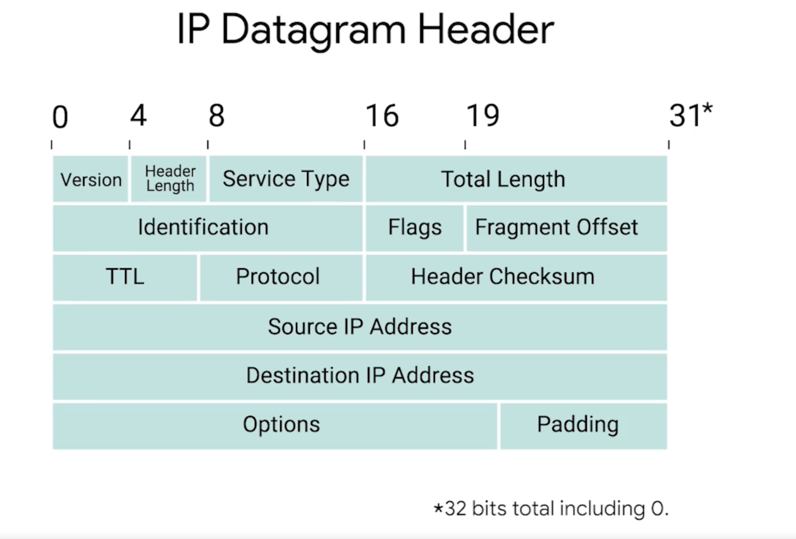

IP Datagram
Table of Contents
- 1. Header
- 1.1. 1. Version
- 1.2. 2. Header Length
- 1.3. 3. Service Type
- 1.4. 4. Total Length
- 1.5. 5. Identification Field
- 1.6. 6. Flag Field
- 1.7. 7. Time To Live (TTL) Field
- 1.8. 8. Protocol Field
- 1.9. 9. Header Checksum Field
- 1.10. 10. Source IP Address
- 1.11. 11. Destination IP Address
- 1.12. 12. IP Options
- 1.13. 12. Padding
- 2. Payload
IP datagram is a highly structured series of fields that are strictly defined.

The two primary sections of an IP datagram are the header and the payload:
The maximum size of a single datagram is the largest number you can represent with *16 bits: 65,535.
1. Header
1.1. 1. Version
4 bits Indicates what version of IP is being used.
1.2. 2. Header Length
4 bits
1.3. 3. Service Type
8 bits Can be used to specify details about quality of service or QoS.
The important takeaway about QoS is that there are services that allow routers to make decisions about which IP datagram maybe more important than others.
1.4. 4. Total Length
16 bits Indicates total length of IP Datagram
1.5. 5. Identification Field
16 bits Used to group messages together
1.6. 6. Flag Field
Used to indicate if a datagram is allowed to be fragmented or to indicate that the datagram has already been fragmented.
1.7. 7. Time To Live (TTL) Field
This field is an 8 bit field that indicates how many router hops a datagram can traverse before it's thrown away. Time To Live (TTL)
1.8. 8. Protocol Field
1.9. 9. Header Checksum Field
This field is a checksum of the contents of the entire IP datagram header.
It functions very much like the ethernet checksum.
Since the TTL field has to be re-computed at every router that a datagram touches, the checksum field necessarily changes too.
1.10. 10. Source IP Address
32 bit
1.11. 11. Destination IP Address
32 bit
1.12. 12. IP Options
Optional Field.
Used to set special characteristics for datagrams primarily used for testing purposes.
1.13. 12. Padding
Series of 0's to the ensure header is correct total size.
2. Payload
Contains the TCP Segment within the payload.